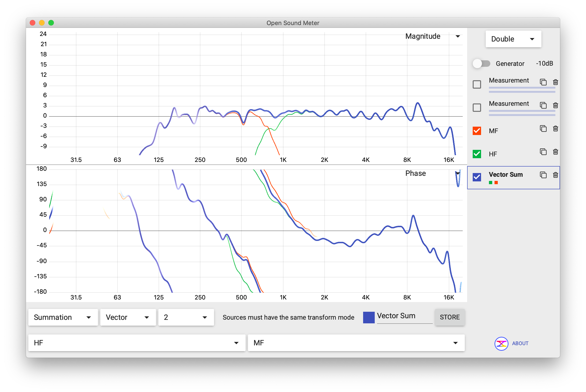
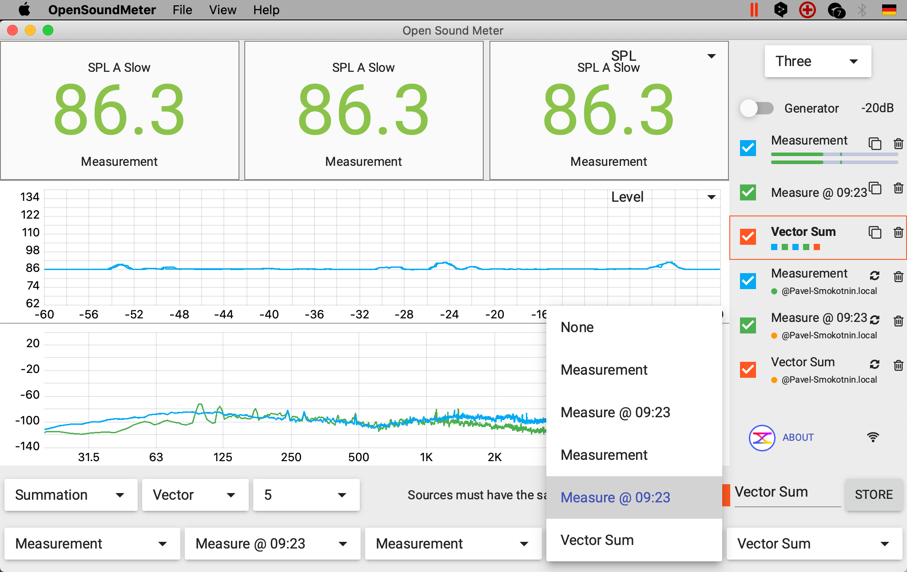
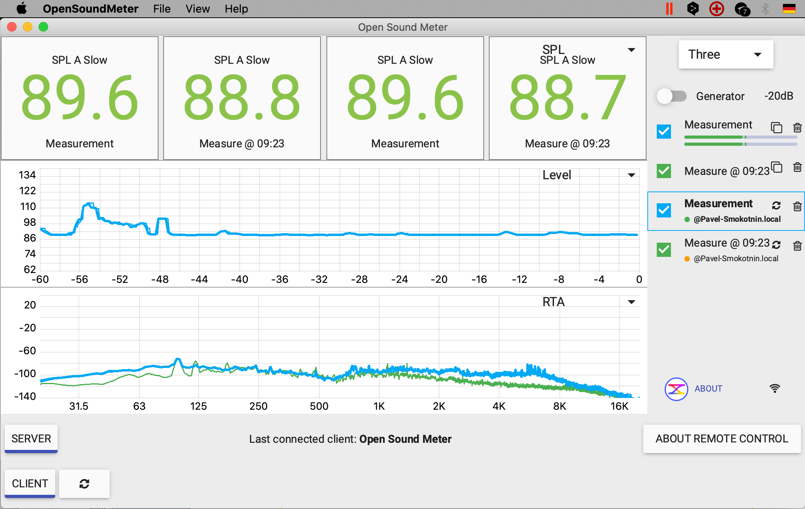
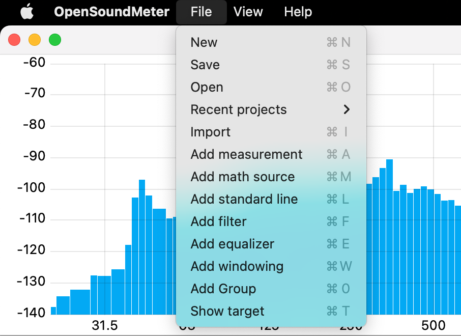
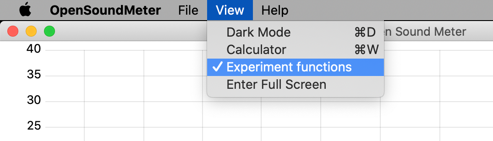
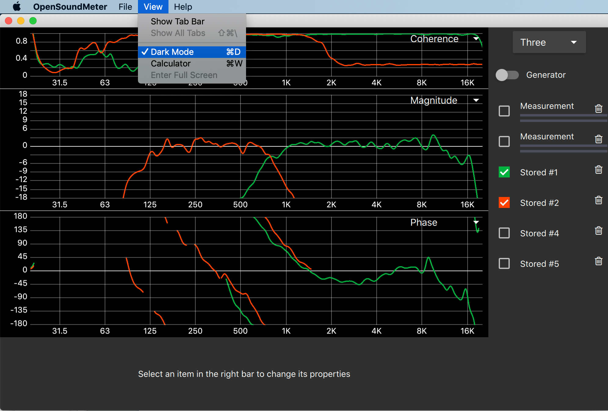
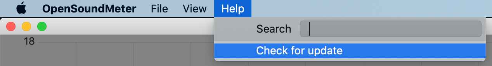

Última página do manual. Cobrimos três temas que não cabiam nas anteriores: o sistema de Math (Vector Sum), o Remote Control (medir com tablet ou outro computador), e os menus File/View/Help com atalhos.
Math: Vector Sum
O recurso mais útil da pasta Math é o Vector Sum — somar duas medições para simular como vão soar juntas. Use isto antes de alinhar fisicamente duas caixas: você vê na tela se vão somar (good) ou cancelar (bad) em frequências críticas.

Como criar um Vector Sum
- Tenha pelo menos duas medições ativas e configuradas (com canal R, para que tenham fase).
- Vá em File → Add Math source (atalho ⌘ M no macOS, Ctrl+M no Windows).
- Na nova entrada que aparece na pasta Math, configure tipo = Summation, método = Vector.
- Selecione as 2 fontes nos dropdowns embaixo. Elas precisam ter o mesmo tipo de gráfico ativo.
- A nova curva (Vector Sum) aparece no gráfico. Você pode mudar a cor dela clicando no checkbox colorido.

Meça o subwoofer sozinho (mute o top) — vira Sub. Meça o top sozinho (mute o sub) — vira Top. Crie um Vector Sum de Sub + Top — você vê como vai ficar a soma na frequência de crossover. Se houver um vale profundo em 80 Hz na curva somada, o sub e o top estão fora de fase ali. Aí você ajusta delay e polaridade no processador até a soma ficar plana.
Remote Control: medir com tablet ou laptop separado
Imagine: o computador com o OSM está conectado no rack, com a interface e os cabos. Mas você precisa andar pela igreja, levar o microfone até o fundo, até o mezanino, até embaixo do balcão — e ver as medições onde está. A solução é o Remote Control.
O recurso transforma um OSM em servidor (no rack) e outro OSM em cliente (no tablet ou laptop secundário). Os dois se conectam pela rede Wi-Fi da igreja, e tudo que você muda no cliente é refletido no servidor — e vice-versa.

Como configurar
- No computador principal (rack): clica em SERVER no rodapé do remote control panel. Ele começa a anunciar na rede.
- No tablet ou laptop secundário: abre o OSM (versão Android para tablet, ou OSM normal para laptop) e clica em CLIENT. Ele descobre o servidor automaticamente pela rede.
- Conexão estabelecida — você pode andar pela igreja com o tablet, mover o microfone, ver as curvas se atualizando em tempo real, dar STORE quando quiser. Tudo é refletido no rack.
Remote Control depende de Wi-Fi estável entre o rack e o ponto onde você está. Em igrejas com Wi-Fi fraco no fundo do templo, a conexão cai e a sincronização trava. Solução: ligar um repetidor Wi-Fi temporário na hora da medição, ou levar um roteador próprio. Mas vale o esforço — o ganho de produtividade na visita é enorme.
Menus File, View e Help
A barra de menus do sistema operacional tem três entradas para o OSM. Cada uma com atalhos no macOS (⌘) e Windows/Linux (Ctrl).
Menu File

| Comando | macOS | Windows/Linux |
|---|---|---|
| New (novo projeto) | ⌘ N | Ctrl+N |
| Save | ⌘ S | Ctrl+S |
| Open | ⌘ O | Ctrl+O |
| Import (csv) | ⌘ I | Ctrl+I |
| Add measurement | ⌘ A | Ctrl+A |
| Add math source | ⌘ M | Ctrl+M |
| Add standard line | ⌘ L | Ctrl+L |
| Add filter | ⌘ F | Ctrl+F |
| Add equalizer | ⌘ E | Ctrl+E |
| Show target | ⌘ T | Ctrl+T |
Menu View


Menu Help

Resumo: workflow recomendado de uma medição
Juntando o que vimos nas 8 páginas do manual, a sequência prática:
- 1 File → New. Configura interface, canais M e R, FFT, smoothing (Página 6).
- 2 Liga o Generator em pink noise, sobe nível baixo (Página 4).
- 3 Modo Double, Magnitude + Phase, com Coherence de olho (Página 3).
- 4 Faz a medição, dá STORE para "antes" (Página 5).
- 5 Ajusta o sistema (EQ na mesa, delay no processador, polaridade), mede de novo, STORE para "depois".
- 6 File → Save com nome da igreja e data. Da próxima visita, abre o projeto e vê o histórico.
Chegou ao fim do manual
Você passou pelas 8 páginas. Não precisa ter decorado nada — agora você sabe onde estão as coisas. Quando bater dúvida na hora de medir, abre aqui e procura.
O OSM tem mais recursos avançados não cobertos aqui (Calculator, Polar plots, integração com processadores específicos). À medida que você for usando, vai descobrindo. Mas o que está nas 8 páginas é mais do que suficiente para fazer o trabalho profissional de alinhamento na sua igreja.
Medição é uma habilidade que se aprende fazendo. Instale o OSM hoje, ligue no sistema que você já tem (mesmo que seja só o microfone embutido do notebook e a caixa Bluetooth), e brinque com os controles. Cometa erros, mude parâmetros, veja o que acontece. Em uma semana de experimentação, você fica fluente.
E quando tiver dúvida específica sobre um conceito de medição (não da ferramenta, mas do significado do que você vê), volta para os Infográficos OSM que cobrem fase, coerência, atraso, função de transferência e FFT em profundidade.